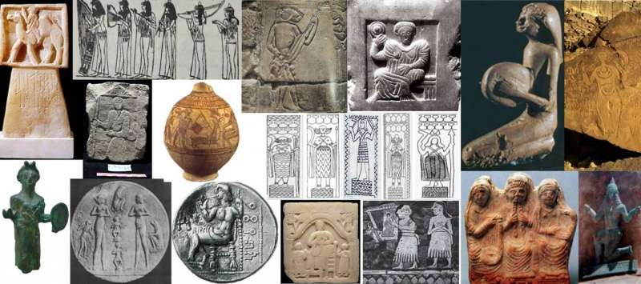
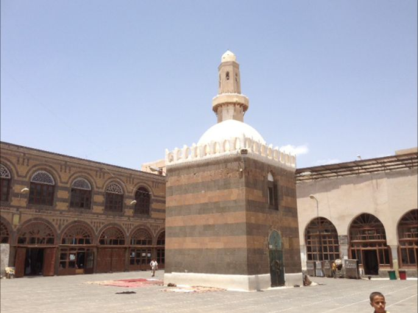
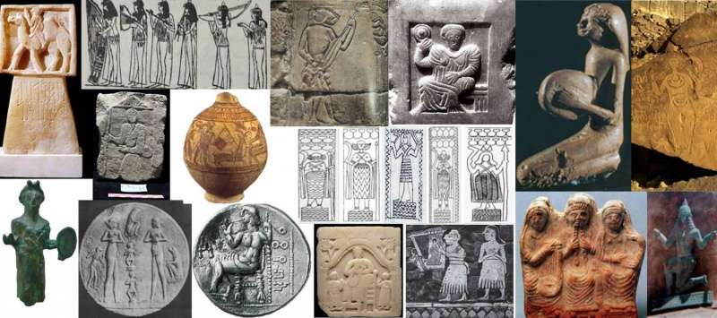
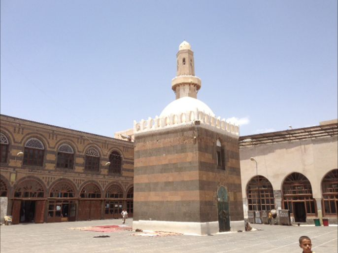

🤵 الأزياء الرجالية التقليدية
تتميز الأزياء الرجالية اليمنية بالأناقة والعملية، وتشمل الثوب، الجنبية، والعمامة، وتختلف حسب المناطق والمناسبات.
الثوب اليمني التقليدي
الثوب هو الزي الأساسي للرجل اليمني، يتميز بقصته الواسعة وألوانه المتنوعة. يُصنع من أقمشة مختلفة حسب المناسبة والطقس، ويُزين أحياناً بتطريزات جميلة.
- أقمشة قطنية وحريرية فاخرة
- ألوان متنوعة (أبيض، بيج، رمادي)
- قصة واسعة ومريحة
- تطريزات يدوية دقيقة
الجنبية اليمنية
الجنبية هي الخنجر التقليدي اليمني، رمز الرجولة والشرف. تُصنع من معادن ثمينة وتُزين بنقوش معقدة، وتُحمل في حزام خاص يُسمى "الحياصة".
- مقبض من قرن وحيد القرن أو العاج
- نصل من الفولاذ المقوى
- غمد مزخرف بالفضة والذهب
- حزام جلدي مطرز (الحياصة)
العمامة والطاقية
غطاء الرأس التقليدي يشمل العمامة والطاقية، ويختلف شكلها ولونها حسب المنطقة والمكانة الاجتماعية. تُصنع من أقمشة قطنية أو حريرية.
- العمامة البيضاء للمناسبات الرسمية
- الطاقية المطرزة للاستخدام اليومي
- ألوان وأشكال متنوعة حسب المنطقة
- رمز للوقار والاحترام
👗 الأزياء النسائية التقليدية
تتميز الأزياء النسائية اليمنية بالألوان الزاهية والتطريزات الذهبية الفاخرة، وتعكس الذوق الرفيع والحرفية العالية.
الزي الصنعاني
الزي التقليدي لنساء صنعاء، يتميز بالألوان الداكنة والتطريزات الذهبية الفاخرة.
الزي التهامي
زي نساء تهامة الملون والمزخرف، يعكس البيئة الساحلية والثقافة المتنوعة.
الزي الحضرمي
الزي التقليدي لنساء حضرموت، يجمع بين الأناقة والبساطة مع لمسات من التراث العربي الأصيل.
معرض الأزياء النسائية
 



💍 الحلي والمجوهرات التقليدية
تشتهر اليمن بصناعة الحلي والمجوهرات الفضية والذهبية المزخرفة، والتي تُعتبر جزءًا لا يتجزأ من الزي التقليدي.
الحلي الفضية
تشمل الأساور، الخلاخيل، والقلائد المصنوعة من الفضة الخالصة والمزينة بالأحجار الكريمة.
- أساور فضية مزخرفة
- قلائد بالأحجار الكريمة
- خلاخيل تقليدية
- خواتم منقوشة
الحلي الذهبية
مجوهرات ذهبية فاخرة تُلبس في المناسبات الخاصة، مزينة بالأحجار الكريمة والنقوش الدقيقة.
- عقود ذهبية فاخرة
- أقراط مرصعة
- أساور ذهبية
- دبابيس الحجاب
الأحجار الكريمة
تُستخدم الأحجار الكريمة اليمنية مثل العقيق والفيروز في تزيين الحلي التقليدية.
- العقيق اليمني الأصلي
- الفيروز الطبيعي
- اللؤلؤ البحري
- الكهرمان القديم
🗺️ التنوع الإقليمي في الأزياء
تختلف الأزياء التقليدية اليمنية من منطقة إلى أخرى، مما يعكس التنوع الثقافي والجغرافي الغني في اليمن.
🏔️ المناطق الجبلية
أزياء تتناسب مع المناخ البارد، تتميز بالأقمشة الثقيلة والألوان الداكنة.
🏖️ المناطق الساحلية
أزياء خفيفة ومريحة تناسب المناخ الحار والرطب، بألوان زاهية ومتنوعة.
🏜️ المناطق الصحراوية
أزياء تحمي من الرمال والشمس، تتميز بالأقمشة المتينة والألوان الترابية.